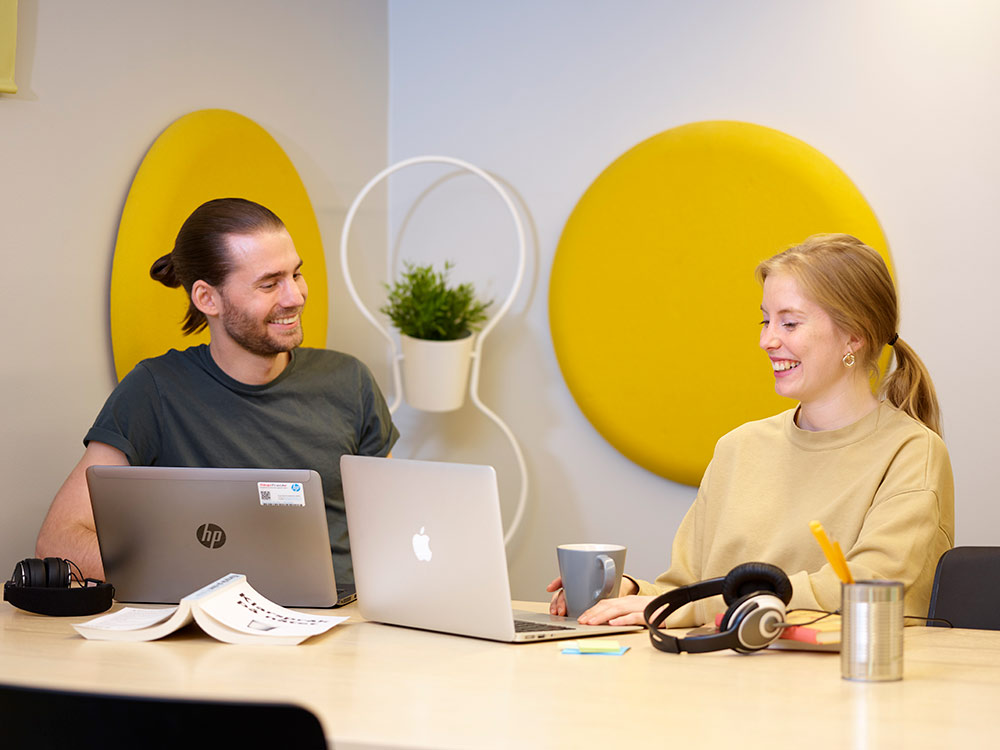

Webbutvecklingsprogrammet
Webbutveckling
Webbutveckling är en het bransch som fortsätter att växa. Med Mittuniversitetets utbildning Webbutveckling i bagaget har du på bara två år lagt grunden för en framgångsrik framtid. Utbildningen riktar sig till dig som har ett intresse för datorer och teknik. Efter studierna kan du arbeta med utveckling, administration och drift av moderna webbplatser. Utbildningen fokuserar på teoretiska och praktiska färdigheter och har stor tyngdpunkt på webbutveckling med moderna hjälpmedel och språk. På kort tid förbereds du för att arbeta med webbutveckling i ditt yrke. Utbildningen ges på distans.
Webbutveckling är den perfekta balansen mellan logik och kreativitet.
Om utbildningen
E-handeln i Sverige växer som aldrig förr och framtidstron är stark bland både e-handelsföretagen och dess konsumenter. Framgångsrika webbplatser skapas genom att användaren sätts i centrum i utvecklingsprocessen. Det är viktigt att ta hänsyn till hur gränssnittet mellan användaren av en e-tjänst och tekniken som får den att fungera ska utformas.
Under utbildningen får du lära dig viktiga delar inom webbanvändbarhet som stöd till den gedigna teknikkunskap du får för att utveckla och administrera framtidens webbplatser och funktionalitet. Det kommer att bli allt viktigare inom webbutvecklingen att kunna ta hänsyn till flera olika accesstekniker genom både fasta och mobila bredbandsuppkopplingar. En trend är också att fler kombinerar och integrerar flera olika former av teknik och funktionalitet på webbplatsen.
Skräddarsytt innehåll
Utbildningen är skräddarsydd för att ge dig alla verktyg som krävs för att arbeta med webbutveckling. Du kommer att lära dig teknikerna bakom de nya trenderna med att skapa webbplatser som har användargenererat innehåll, exempelvis Wikipedia.
Du får på kort tid kunskaper och lär dig arbeta med moderna ramverk och plattformar för utveckling och användande, samt programmeringsspråken:
- HTML
- CSS
- JavaScript
- Node
- PHP
- C#
- ASP med .NET.
Du får också skapa och konsumera webbtjänster samt lära dig att utveckla med webbaserade innehållssystem (CMS).
Projektbaserade kurser
Flera av kurserna i utbildningen är projektkurser där du kommer att ingå i en grupp studenter med skilda kunskaper i modellering och implementering. Dessa projekt lär dig att använda dina egna färdigheter och att kommunicera effektivt med de andra i utvecklingsarbetet, kunskaper som efterfrågas av arbetsgivarna.
Branschen bedöms växa med 20 procent närmsta åren och behovet av webbutvecklare är stort.
Sammankomster
Utbildningen ges helt på distans utan planerade sammankomster på campus. Studietakten är på heltid så du måste räkna med att lägga ned minst 40 timmar i veckan på dina studier. Föreläsningarna som du tar del av sker på dagtid, men det finns även möjlighet att se inspelade föreläsningar i efterhand.
Behörighet
Grundläggande behörighet
Examen efter genomförda studier
Högskoleexamen
Examensbenämningen är Högskoleexamen med inriktning mot datateknik som översätts till Higher Education Diploma with specialization in Computer Engineering.
Efter utbildningen
Det är stor efterfrågan på webbutvecklare och webbdesigners. Branschen bedöms växa med 20 procent de kommande åren och den ökande e-handeln bidrar kraftigt. Behovet av duktiga webbutvecklare är därför stort. Denna utbildning ger dig de kunskaper som marknaden vill ha.